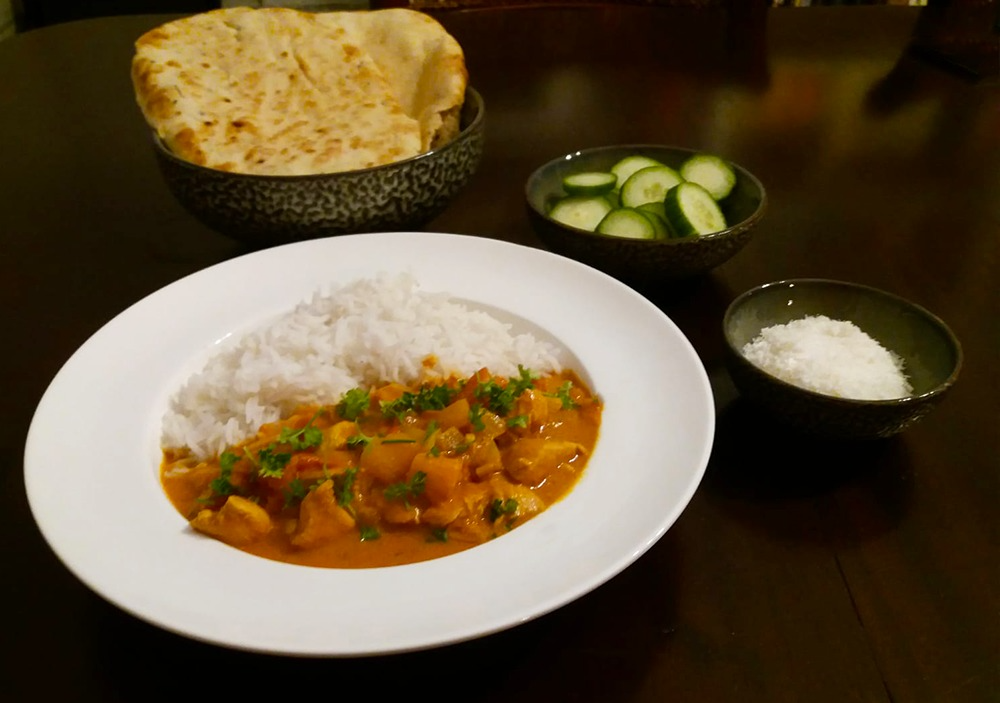

coq au vin

griekse vega gyros wraps

kip in de hoed

biefstuk met chimichurri & gegrilde groenten

bami met spinazie

japanse beef teriyaki

indiase tikka masala
Begin op tijd met dit recept! De kip moet namelijk nog eventjes in de koelkast staan.

Bereidingsduur: 45 minuten
Aantal personen: 4
Ingrediënten:
300 gram kip
250 gram basmatirijst
400 gram tomaten
1 paprika
1 ui
4 stuks naan brood
70 gram tomatenpuree
400 milliliter kokosmelk
200 gram yoghurt
2 eetlepels paprikapoeder
2 theelepels komijn
3 theelepels garam masala
2,5 eetlepels gemberpoeder
2 eetlepels citroensap
5 teentjes knoflook
2 theelepels kerriepoeder
1,5 theelepels chilipoeder
1 theelepel korianderpoeder
naar smaak kokospoeder
naar smaak peterselie
300 gram kip
250 gram basmatirijst
400 gram tomaten
1 paprika
1 ui
4 stuks naan brood
70 gram tomatenpuree
400 milliliter kokosmelk
200 gram yoghurt
2 eetlepels paprikapoeder
2 theelepels komijn
3 theelepels garam masala
2,5 eetlepels gemberpoeder
2 eetlepels citroensap
5 teentjes knoflook
2 theelepels kerriepoeder
1,5 theelepels chilipoeder
1 theelepel korianderpoeder
naar smaak kokospoeder
naar smaak peterselie
Instructies:
1. Snijd het vlees in blokjes en marineer met 120 gram yoghurt, 1 EL paprikapoeder, 2 tl komijn, 2 tl garam masala, 2 EL gember, 2 EL citroensap, 3 teentjes fijn gesneden knoflook, 1 tl kerrie en 0,5 tl chilipoeder. Laat dit minstens 2 uur in de koelkast staan.
2. Snijd alle groenten in kleine blokjes.
3. Schep de kip uit de marinade en bak deze in een pan rondom bruin en schep weer uit de pan.
4. Fruit in dezelfde pan de ui en 2 teentjes knoflook. Voeg daarna de tomaten en paprika toe en schep om. Voeg nu ook 1 tl gember, 1 tl chilipoeder, 1 EL paprikapoeder, 4 EL yoghurt, 1 tl korianderpoeder, 1 tl garam masala, 1 tl kerriepoeder en de rest van de marinade toe en bak dit kort.
5. Voeg de kip, kokosmelk en tomatenpuree hieraan toe en laat dit 15 minuten pruttelen tot de saus de goede dikte heeft.
6. Kook de rijst en verwarm de oven voor. Besprenkel het naan brood met water en doe 4 minuutjes in de oven. Snijd de koriander of de peterselie fijn.
7. Serveer de kip, de rijst en het brood apart. Strooi wat koriander of peterselie over de kip en klaar! Strooi eventueel kokospoeder eroverheen voor een mildere smaak.
1. Snijd het vlees in blokjes en marineer met 120 gram yoghurt, 1 EL paprikapoeder, 2 tl komijn, 2 tl garam masala, 2 EL gember, 2 EL citroensap, 3 teentjes fijn gesneden knoflook, 1 tl kerrie en 0,5 tl chilipoeder. Laat dit minstens 2 uur in de koelkast staan.
2. Snijd alle groenten in kleine blokjes.
3. Schep de kip uit de marinade en bak deze in een pan rondom bruin en schep weer uit de pan.
4. Fruit in dezelfde pan de ui en 2 teentjes knoflook. Voeg daarna de tomaten en paprika toe en schep om. Voeg nu ook 1 tl gember, 1 tl chilipoeder, 1 EL paprikapoeder, 4 EL yoghurt, 1 tl korianderpoeder, 1 tl garam masala, 1 tl kerriepoeder en de rest van de marinade toe en bak dit kort.
5. Voeg de kip, kokosmelk en tomatenpuree hieraan toe en laat dit 15 minuten pruttelen tot de saus de goede dikte heeft.
6. Kook de rijst en verwarm de oven voor. Besprenkel het naan brood met water en doe 4 minuutjes in de oven. Snijd de koriander of de peterselie fijn.
7. Serveer de kip, de rijst en het brood apart. Strooi wat koriander of peterselie over de kip en klaar! Strooi eventueel kokospoeder eroverheen voor een mildere smaak.